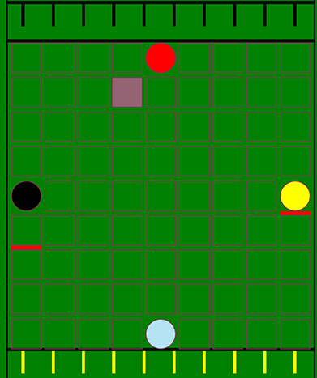

Prototype d'un jeu appelé Quoridor en JavaScript, en groupe de deux. Les joueurs doivent pouvoir jouer à tour de rôle et déplacent leur pion ou placent des barrières suivant les contraintes des règles. Le premier à avoir atteint la ligne opposée est déclaré vainqueur de la manche. Il est ensuite proposé de réaliser une nouvelle manche, en alternant le premier joueur. Le score de chaque joueur est indiqué.
